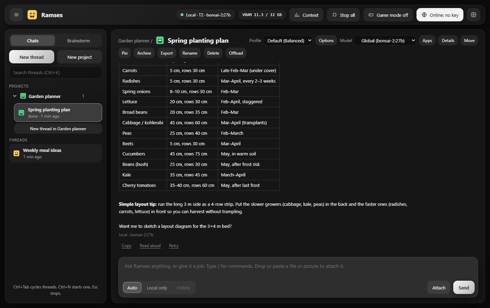
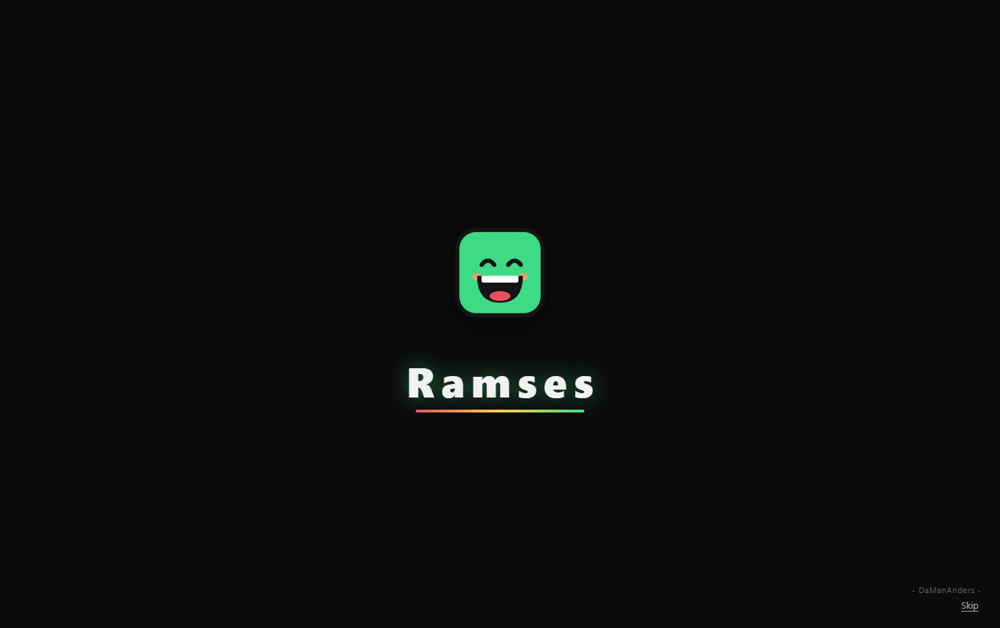

Ramses.
Your own AI assistant, running on your own PC. It chats, reads and changes files, runs code, searches the web, makes pictures and keeps your idea boards. It works offline with models that run on your graphics card, and you decide how much it may do on its own.
Install Ramses.cmd. Installs for your Windows account only, no administrator rights needed.
All Downloads & Release Notes
Read the Quick Start ↓

Getting Started
- For local models, install Ollama (free). Without it, Ramses works with an online key.
- Download, unzip, and run
Install Ramses.cmd. Windows may say it’s from an unknown publisher: choose More info → Run anyway. - Open Ramses from the desktop. The setup explains each choice and offers to download the models picked for your PC.
- Take the short tour, or skip it and start asking.
What’s in 1.0
- First public release: chats, projects, tools, memory, boards, images and code.
- Model survey: picks and measures the best local models for your PC.
- Guided first setup with model downloads, a tour, and the drop-in intro.
- Context and usage window, accessibility options and 16 colour themes.
Ask Him Anything
Is it private?
Private by default. Local models through Ollama, on your PC. Add your own online key only if you want, with a monthly spending limit. Passwords and keys are never sent anywhere.
How does it know which model to use?
Picks its own models. Checks your graphics card and memory, picks the best model for everyday chat, big jobs and pictures, measures how fast each really runs, and suggests better ones to download.
What can it actually do?
Does the work. Files (always backed up), PowerShell, git, Python, web search, pictures, scheduled jobs, tool servers (MCP) and your own apps, with several tasks at once.
Who decides what it's allowed to do?
You set the rules. Five freedom levels from “asks before everything” to “just does it”, safety rails, your own guidelines, a plan before multi-step work, and a stop key that works from anywhere.
Does it remember things?
Projects and memory. Projects with their own threads, memory, guidelines and models; search by meaning across your notes; memory you can read and edit as plain files.
Can I sketch ideas with it?
Brainstorm boards. Canvases, sticky notes, flow diagrams and task boards, saved on your PC.
Can I see what it's thinking about?
See what it sees. The Context and usage window shows what the model reads for each chat, how full its memory is, which models are loaded, and 30 days of use.
Can I make it mine?
Yours to shape. A guided first setup, 16 colour themes, your own name for it, and a full set of accessibility options.
A Closer Look



Quick Start
Ask or Give a Job
Type in the box at the bottom. Drop in a file or picture, press Speak to talk, or type / for commands. Auto lets Ramses choose where to run; Local only keeps everything on your PC.
Organise With Projects
A project groups threads and gives them their own memory, guidelines, model and working folder. Options on any chat sets its model, effort and guidelines.
Decide Its Freedom
The profile sets what it may do without asking. When it needs your OK, a card appears in the chat. Ctrl+Alt+End stops everything from anywhere.
Watch and Tune
Ctrl+Shift+U opens Context and usage. Press ? for every shortcut. Settings holds models, look, accessibility and connections.
System Requirements
- Windows
- Windows 10 or 11, 64-bit. Nothing else to install for the app itself: .NET is built in.
- For Local Models
- Ollama (free). An NVIDIA graphics card with 8 GB or more is best; Ramses picks smaller models for smaller cards, and works online-only without one.
- Space
- About 300 MB for the app. Models take 2 to 20 GB each; the setup shows the total against your free space before downloading.
Questions
Is it really free?
Yes. Ramses is free and open source under the MIT licence. Local models are free too. If you add an online key, that provider charges you for what you use, and Ramses can stop at a monthly limit you set.
Does it send my chats anywhere?
Not unless you add an online key and let a question go online. Everything else stays on your PC. Web search, if left on, sends only the search words. Passwords, keys and tokens are removed before anything goes online, always.
Which models does it use?
Any model from Ollama. Ramses checks your hardware, picks the best one it has for each job, measures how fast each really runs, and suggests downloads that would do better. You can change every pick in Settings, Models.
Windows warns about the installer
The app isn’t code-signed, so SmartScreen shows “unknown publisher” (More info → Run anyway). Check the download against the SHA-256 shown next to the button.
Can I rename it?
Yes. Give your assistant any name in the setup or in Settings. You can also have the app itself, its window and its shortcuts take that name.
Where is my data, and how do I remove it?
Everything lives in %LOCALAPPDATA%\Ramses\data: threads, memory, boards, settings and an encrypted key vault. Uninstall Ramses.cmd removes the app and keeps your data unless you delete that folder.